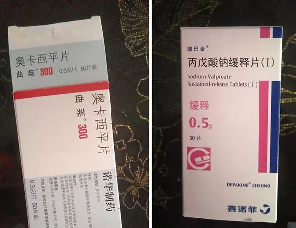

救救孩子！湖北一百多名癫痫儿童，马上要断药了！
原文链接 备份链接 刘晓红看着愈演愈烈的疫情，儿子聪聪的抗癫痫药却越吃越少，她有些慌了。 聪聪现年5岁，2岁时被诊断为癫痫。现在必须每天两次，吃两种药物来控制病情。但受“封村”影响，药物无法补充，现有药物只能支撑到2月12日。 癫痫俗称“ …
澎湃新闻记者 卫佳铭
“药到了，我的儿子不会死了，我要好好照顾他。”
2月9日，癫痫病孩妈妈谢晓英告诉澎湃新闻（www.thepaper.cn）。这一天，她终于在湖北汉川市回龙镇镇上的快递点收到了一个特殊的包裹，里面是病友们从安徽和湖南代买、再通过邮政快递寄来的7瓶药物。
二十天前，谢晓英带着5岁的儿子聪聪从湖南长沙回湖北孝感汉川市老家过年。她没想到，小小的汉川市回龙镇会成为她走不出去的“城”。
聪聪两岁时被诊断出癫痫，需要每日两次服用两种药物来控制病情。出门前，谢晓英已为儿子预备了近一个月的药。
然而，让她猝不及防的是，1月23日，因新冠肺炎疫情，武汉“封城”，一天后，孝感也全面“封城”。

癫痫宝宝日常服用药物。受访者供图
望着药瓶里逐日减少的药片，谢晓英开始睡不着觉了。停药，意味着生命的危险。谢晓英跑遍了回龙镇也买不到治疗癫痫的药物，镇政府的工作人员劝她“再撑一下”。“不想拿儿子的命来撑”，她想到自驾回湖南取药，“试了两次，每次都被执法人员拦下”。
情急之下，谢晓英通过网络发出了求助，她发现，自己的遭遇并非孤例。
2月6日，身在上海的癫痫病孩妈妈花妈看到了网络上病友们的求援，她和其余3名志愿者一起，搭建起临时的湖北省内癫痫宝宝药物求助群，为困境中的湖北病孩父母寻求药物和物流渠道。短短4天，群里已经聚集了上百名来自随州、孝感、黄石、武汉等12个地区的癫痫宝宝家长。
新华社2月8日报道，国务院办公厅日前印发《关于做好公路交通保通保畅工作确保人员车辆正常通行的通知》（以下简称：《通知》），要求做好公路交通保通保畅工作，确保人员车辆正常通行。
巧的是，第二天，谢晓英在快递点收到了病友们帮儿子代买的药。

2月9日，谢晓英收到来自安徽和湖南的两个包裹，里面装着她等待已久的7瓶癫痫药物。受访者供图
“封城”后买不到的药和回不去的家
距离2020年农历新年还有一周时，汉川的家人就开始催谢晓英回家。那时，已有疫情消息传出，与长辈沟通无果后，她硬着头皮回去了。出发前，她给患有癫痫的儿子聪聪备上了够近一个月的德巴金丙戊酸钠口服溶液和妥泰托吡酯片，她以为，这些药足以支撑到他们回家。
岂料，疫情愈演愈烈，1月23日，武汉“封城”了。
一天后，谢晓英所在的孝感市新冠肺炎防控指挥部发布5号令：高铁站、城铁站、火车站离开孝感市辖区通道暂时关闭；孝感市辖区内公交、班线客运、农村客运、旅游包车、农村客运渡口、网约车暂停运营。
谢晓英感觉自己被困住了，她的焦虑来自儿子的病。聪聪在两岁时被诊断出癫痫，三年来一直依赖药物维持。
癫痫，俗称“羊癫风”，发病时患者会突然意识丧失，出现吐白沫、肌肉强直性收缩等症状。目前，癫痫的治疗手段主要是药物。患者在服药期间如果无故减药、断药，极易导致癫痫症状复发。然而，许多抗癫痫药物属于治疗神经类精神疾病的药品，购买相对困难。
谢晓英看着药瓶里的药，每天数，每天少，这令她焦虑到失眠。她去镇上找药，却发现镇上连个像样的药店都没有。随后，谢晓英又找到回龙镇政府工作人员求助，此前她从不愿公开儿子病情，此时亦顾不上面子，可对方安慰她说，请她再撑一下。
“要拿儿子的命去撑吗？”谢晓英不服，她又拨通了市长热线的电话，对方回复她，有特殊情况可找镇里开具书面证明。
2月3日，谢晓英让年后要回湖南工作的丈夫去镇上打了复工证明，同时把聪聪的情况一并说明。然而，拿到手里的证明中，却没有聪聪的病情。
2月4日，谢晓英一家三口带着证明踏上了回湘路。然而，车子还没驶出回龙镇，谢晓英和丈夫就被拦下了。焦急万分，谢晓英哭着拿出聪聪的药罐给执勤民警看，证明自己没有骗人。最终，因为证明内容不全，谢晓英一家被劝回了。
回去后，谢晓英丈夫又到镇政府重新打了一份证明。一天后的2月5日清晨，一家三口再次出发，“当时我想，如果实在去不了湖南就去近一点的武汉。”
但他们还是被拦下了。
“最开始是准备上高速，结果挡了两辆货车，把路堵死了，没办法只能绕道，绕到另一个镇也不行，我们又开过了几个村，眼看到快到高速囗，又被拦了。”谢晓英告诉澎湃新闻，执法人员将她口头批评了一顿便劝回了，“说我们不听话，非要出市。”

2月9日，谢晓英收到来自安徽和湖南的两个包裹，里面装着她等待已久的7瓶癫痫药物。受访者供图
尚未畅通的物流和有门槛的进口药
无奈之下，谢晓英转向网络求援。虚拟的网络空间里，和她一样“为药疯狂”的家长聚集在了一起。
澎湃新闻了解到，截至1月24日，湖北省内，共有武汉、鄂州、仙桃、枝江、潜江、黄冈、赤壁、荆门、咸宁、黄石(含大冶市、阳新县)、当阳、恩施、孝感13个地区“封城”。
相比谢晓英，湖北随州的航航妈妈遭遇的麻烦更为棘手。航航今年5岁，长期服用德巴金、妥泰、奥卡西平曲莱和喜保宁四种药物，其中喜保宁（SABRIL）是进口药，国内很难购买，她每次都要托人从台湾代购，每盒100片，定价760元。
航航妈妈告诉澎湃新闻，她是1月16日带着儿子从武汉回随州过年的，本以为很快能回家，就没带太多药。航航妈妈说，目前普通快递进不了湖北，靠省外寄送药物只能靠邮政快递，但邮政快递邮寄药品需要查验药品的发票，而她托人代购的喜保宁大多没有发票可以提供。目前，航航的喜保宁只剩下十天的量了，武汉的家里仍有存货，但却无法取，也寄不回。
找药的日子里，航航妈妈曾在网上找到一名山东的病友，恳请对方代买药物后即送到随州，但又因收件地在湖北，且适逢新年假期，快递公司未能寄出，目前快件仍积压在发货地，没有发出。
除了物流上的阻碍之外，一些癫痫患儿所需的药物还需要更复杂的购买门槛。
湖北襄阳的罗丹告诉澎湃新闻，她儿子壮壮今年3岁半，除了早晚服用德巴金和妥泰外，还需要服用硝西泮片。硝西泮片属于接受特殊管理的二类精神药品，需要去医院开处方，但现在隔离期连村都出不了，更别提去医院，“之前没有疫情的时候，也只有在武汉能开得到。”
罗丹说，如果没有硝西泮片，壮壮癫痫发作时的反应会特别大，暂时也没有可以替代的药，望着村口的严格把守，她心急如焚。
新华社2月8日发文称，国务院办公厅印发《通知》，就进一步做好公路交通保通保畅工作，确保人员车辆正常通行，切实维护经济社会正常秩序作出专门部署。要求有序恢复公路运输服务和切实做好应急物资运输。严禁阻断国省干线公路，严禁硬隔离或挖断农村公路。要加强交通疏导，防止发生长时间、长距离公路交通拥堵，确保应急车道畅通。各地区、各有关部门要突出重点，优先保障湖北省特别是武汉市的各类应急运输，优先保障疫情防控物资、生活必需物资运输。
上海癫痫儿童母亲发起的救助
2月6日，上海的癫痫儿童母亲花妈在网上留意到了湖北地区癫痫宝宝缺药的情况，她接连在微博呼吁，同时为有买药需求的家庭建立起名为“湖北宝宝，加油！”微信群。
倡议发出后，有医疗背景的志愿者闵磊、戴珅懿、韩志毅主动联系到她加入互助群，四人一起逐一统计每个家庭具体的药物需求和数量。
花妈告诉澎湃新闻，目前群里已经有百余名家长前来求助，有癫痫药物需求的12个地区涵盖：随州、孝感、黄石、武汉、十堰、荆门、荆州、黄冈、天门、咸宁、襄阳和仙桃。
2月10日，花妈在澎湃新闻采访时总结了目前湖北患儿缺药主要问题及难点。首先，癫痫药物种类多，缺乏综合采购平台，网上大平台由于顺丰等物流推迟湖北客户发货。其次，湖北癫痫药只有市级大药房有有少量存货，较为分散，药品种类不全，目前志愿者正在做的工作是联系湖北医药公司在药店根据需要发药。
花妈坦言，最大的难点在于物流，“目前只有邮政快递可以走，但是据我们了解，镇上工作人员3天才去一次县里邮局，EMS到县之后，如果不催可以停留一周甚至更多时间，效率也高不起来，外加一些乡村村路物理隔绝，路被挖断，取件存在困难。”
此外，对于民间自行交换寄药，花妈也有隐忧，在她看来，自购药物的规格和型号并不统一，贸然交换的风险较大，她呼吁家长尽量通过正规渠道购买，同时也希望能有更多的社会力量参与进来，帮助解决湖北癫痫宝宝的药荒。
所幸的是，几日来，志愿者们努力在湖北省外联系到一些销售常见癫痫药物的药企和药房，采用代买的方式，紧急调配到第一批药物，已于近日通过邮政快递发出，很快将送达家长手中。
2月9日，在焦急等待一周后，谢晓英终于在回龙镇邮政快递接收点拿到了寄自安徽和湖南的两个包裹，里面装有5瓶德巴金和2瓶妥泰。
谢晓英告诉澎湃新闻，德巴金够聪聪吃四个月，妥泰够吃两个月，“药到了，我的儿子不会死了，我要好好照顾他，但还有很多孩子的药还没着落，那些妈妈的心情和我是一样的，虽然娃有病，大家都从没放弃过。”
（文中除闵磊、戴珅懿、韩志毅外，其余人名为化名）
附录：
**
需求药品名称：**
妥泰 托吡酯片 25mg*60片
曲莱 奥卡西平 0.3g
曲莱 奥卡西平 0.15g
曲莱 奥卡西平口服混悬液 60mg/ml 100ml/瓶
东维力，左卡汀口服溶液，10mlx6支
德巴金口服悬液 300ml
德巴金丙戊酸钠缓释片 0.5g*30片
开浦兰左乙拉西坦片 0.5g
开浦兰左乙拉西坦片 0.25g
卡玛西平 200mg*30片
利必通 50mg
利必通 25mg
妥泰胶囊 25mg
亚叶酸钙15mg
爱康保氢钴氨维生素B12注射液2ml10毫克x100支
氯硝西泮2毫克（江苏恩华药业）
硝西泮
进口药：
氯巴占 德版10mg
喜宝宁 氨已烯酸（SABRIL）100粒（500mg）
佐沙伲胺 台版 200mg
本期编辑 常琛
推荐阅读


原文链接 备份链接 刘晓红看着愈演愈烈的疫情，儿子聪聪的抗癫痫药却越吃越少，她有些慌了。 聪聪现年5岁，2岁时被诊断为癫痫。现在必须每天两次，吃两种药物来控制病情。但受“封村”影响，药物无法补充，现有药物只能支撑到2月12日。 癫痫俗称“ …
原文链接 备份链接 各地民间对“武汉人”的恐惧和谩骂不忍卒读，恐惧是远比病毒更凶猛的疾病。 口述 | 黄 政 整理 | 金 姬 我是武汉人，毕业来上海已经十多年，在上海落户安家也已七年。因为我和妻子工作较忙，去年夏季开始我父母便从武汉来沪 …
原文链接 备份链接 非常时期，武汉成了全国人民挂念、祈福的城市。封城后，武汉人民的真实生活是什么样？ 正和岛自1月26日起特别推出《叶青：我在武汉疫区的第N天》专栏。叶青是一位定居武汉40年的市民，也是一名学者和官员。接下来的一段时间， …
原文链接 备份链接 文｜吴楠 武汉人宋耀的”过早”（武汉方言，意为吃早饭）随着1月23日的武汉封城一同取消了。 从那天起，上午十点半、十一点，成了宋耀的起床时间，“我也不要去上班，起得太早在家里又觉得很闷，还不如晚 …
原文链接 备份链接 _ 今起武汉全市范围对居民小区实施封闭管理。小编身在武汉，响应号召，更要在家安心分析数据。武汉挺住！ _ 文 |《财经》数据研究员 徐进 图 | 视觉中心总监 黎立 编辑 | 谢丽容 1. 今日概况 2月10 …